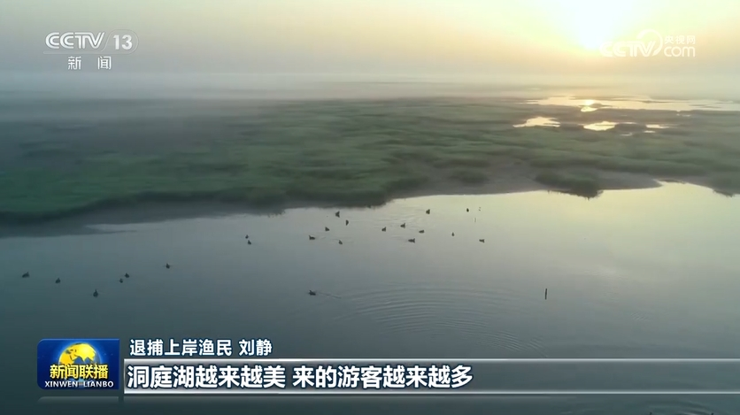

| 姓名 | 性别 | 头像 | 职位 | 入职日期 | 最后操作时间 | 操作 |
|---|---|---|---|---|---|---|
| 令狐冲 | 男 | 讲师 | 2019-03-15 | 2024-06-12 10:25:36 | ||
| 任盈盈 | 女 | 班主任 | 2020-07-01 | 2024-06-11 16:48:02 | ||
| 岳不群 | 男 | 教研主管 | 2015-09-08 | 2024-06-10 09:13:47 | ||
| 林平之 | 男 |  |
讲师 | 2021-04-20 | 2024-06-09 14:02:19 | |
| 宁中则 | 女 | 班主任 | 2016-02-18 | 2024-06-08 11:37:55 | ||
| 向问天 | 男 | 学工主管 | 2018-11-06 | 2024-06-07 17:20:41 | ||
| 仪琳 | 女 | 咨询师 | 2022-08-23 | 2024-06-06 08:55:13 | ||
| 左冷禅 | 男 | 教研主管 | 2014-05-12 | 2024-06-05 19:44:08 |